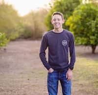

Owen Jackson | WDD 130

Hello! I am Owen Jackson. I am pursuing a degree in Software Development through the BYU Pathway program. I enjoy playing video games, watching movies, and figuring out solutions to difficult problems. My goal is to become a software developer for Disney Experiences at Disney World. Obtaining my Software Engineering degree from BYU-Idaho through the BYU Pathway program is my first major step towards accomplishing this goal. I served a full-time mission for the Church of Jesus Christ of Latter-day Saints from 2020-2022 in the Washington Kennewick Mission. Throughout my service as a missionary, I developed several Christlike attributes, including "diligence." As I continue to become a more diligent worker by engaging in my studies, I will gain the skills necessary to achieve my goal.